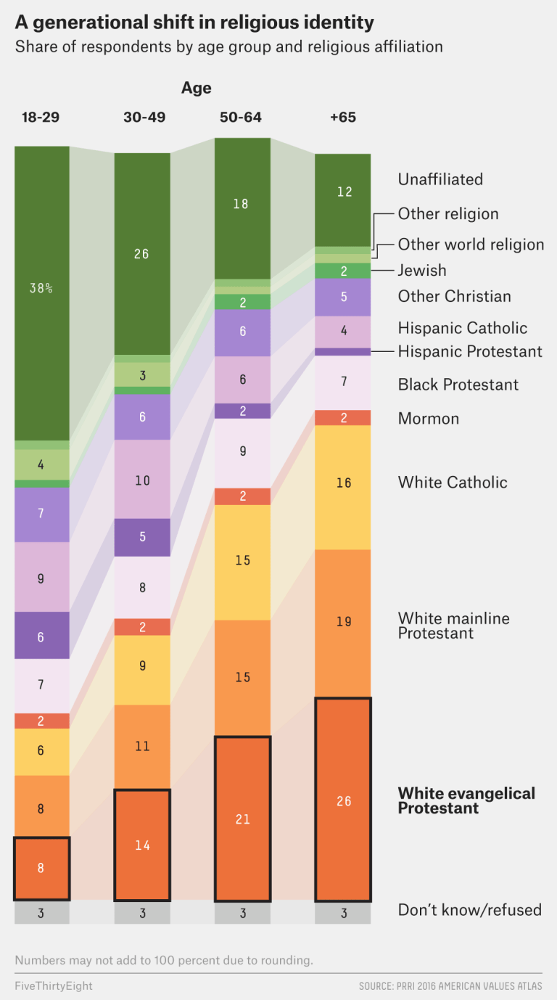
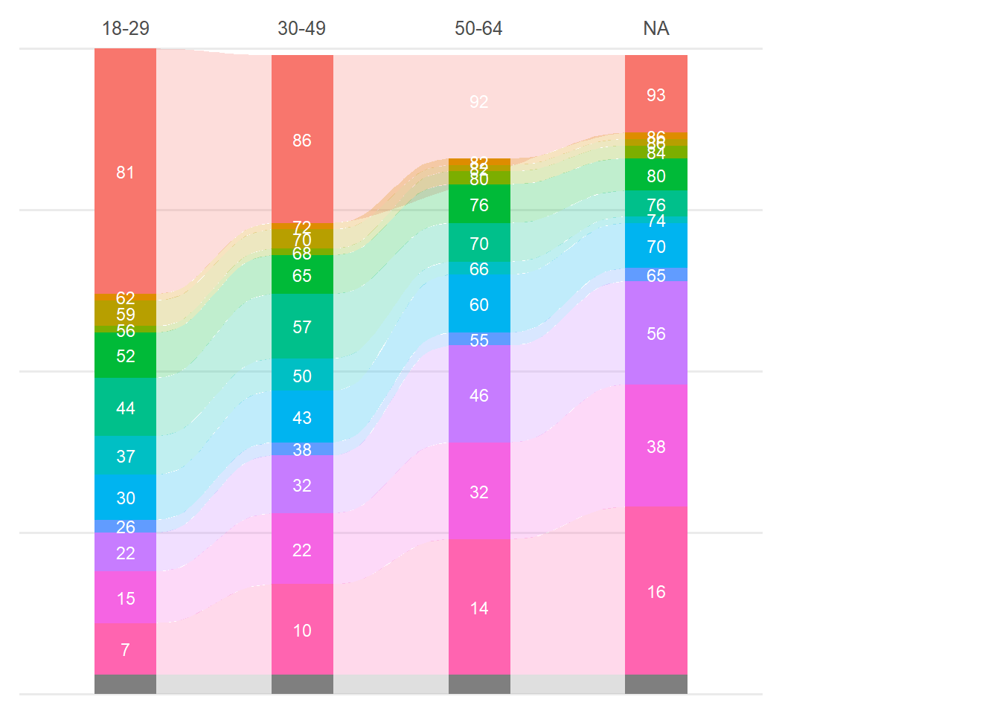
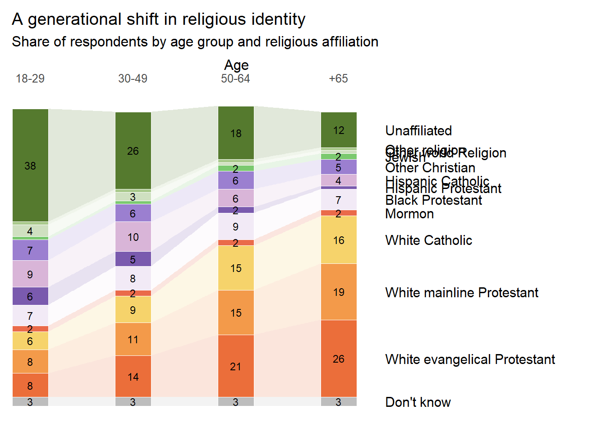

For this exercise, I’ll try to recreate this figure from FiveThirtyEight:

Now, I had to scroll quite a bit because there were definitely graphs I was interested in recreating for the fun of it but they either seemed too complicated or too I-will-never-need-to-make-this-kind-of-graph. However, I eventually stumbled onto this figure here which I learned is called an alluvial plot. While stacked bars by themselves should be able to convey the same amount of information, I think this looks great and I’d like to learn how to make one.
Getting the Data
Since the plot essentially provides the numbers, I went ahead and made the csv myself in Excel.
library(tidyverse)library(ggalluvial)library(ggrepel)library(here)data_path <-here("presentation-exercise","presentation_data.csv") #using Here to set the path toward the data filedata <-read.csv2(data_path, sep =",", header=TRUE) #reading in the data fileprint(data) #taking a look at the data file
Group age_group percent religion
1 1 18-29 38 Unaffiliated
2 2 30-49 26 Unaffiliated
3 3 50-64 18 Unaffiliated
4 4 65 12 Unaffiliated
5 5 18-29 1 Other religion
6 6 30-49 1 Other religion
7 7 50-64 1 Other religion
8 8 65 1 Other religion
9 9 18-29 4 Other world Religion
10 10 30-49 3 Other world Religion
11 11 50-64 1 Other world Religion
12 12 65 1 Other world Religion
13 13 18-29 1 Jewish
14 14 30-49 1 Jewish
15 15 50-64 2 Jewish
16 16 65 2 Jewish
17 17 18-29 7 Other Christian
18 18 30-49 6 Other Christian
19 19 50-64 6 Other Christian
20 20 65 5 Other Christian
21 21 18-29 9 Hispanic Catholic
22 22 30-49 10 Hispanic Catholic
23 23 50-64 6 Hispanic Catholic
24 24 65 4 Hispanic Catholic
25 25 18-29 6 Hispanic Protestant
26 26 30-49 5 Hispanic Protestant
27 27 50-64 2 Hispanic Protestant
28 28 65 1 Hispanic Protestant
29 29 18-29 7 Black Protestant
30 30 30-49 8 Black Protestant
31 31 50-64 9 Black Protestant
32 32 65 7 Black Protestant
33 33 18-29 2 Mormon
34 34 30-49 2 Mormon
35 35 50-64 2 Mormon
36 36 65 2 Mormon
37 37 18-29 6 White Catholic
38 38 30-49 9 White Catholic
39 39 50-64 15 White Catholic
40 40 65 16 White Catholic
41 41 18-29 8 White mainline Protestant
42 42 30-49 11 White mainline Protestant
43 43 50-64 15 White mainline Protestant
44 44 65 19 White mainline Protestant
45 45 18-29 8 White evangelical Protestant
46 46 30-49 14 White evangelical Protestant
47 47 50-64 21 White evangelical Protestant
48 48 65 26 White evangelical Protestant
49 49 18-29 3 Don't know
50 50 30-49 3 Don't know
51 51 50-64 3 Don't know
52 52 65 3 Don't know
AI Prompts
Testing the extent of ChatGPT’s capabilities, I uploaded the figure I want to recreate and a screenshot of my data.
“I have data that looks like this. Can you help me recreate a figure in R that looks like this?”
Just for reference, here is the immediate code it provided and what the first draft of our figure looks like:
# ---- example: read your data ----# Your data should have: age_group, religion, percent# df <- read_csv("your_file.csv")# If you already have df in memory, just ensure these columns exist:# df: age_group (e.g., "18-29","30-49","50-64","+65"), religion, percent (numeric)data <- data %>%mutate(age_group =as.character(age_group),percent =as.numeric(percent) )# ---- control the order of bars and stack order ----age_levels <-c("18-29", "30-49", "50-64", "+65")religion_levels <-c("Unaffiliated","Other religion","Other world Religion","Jewish","Other Christian","Hispanic Catholic","Hispanic Protestant","Black Protestant","Mormon","White Catholic","White mainline Protestant","White evangelical Protestant","Don't know/refused")data <- data %>%mutate(age_group =factor(age_group, levels = age_levels),religion =factor(religion, levels = religion_levels) )# ---- plot ----p <-ggplot( data,aes(x = age_group,stratum = religion,alluvium = religion, # ribbons connect same religion across agesy = percent,fill = religion )) +geom_alluvium(alpha =0.25, color =NA, width =0.35) +# the "trails"geom_stratum(width =0.35, color =NA) +# the stacked bars# inside labels (only for bigger segments)geom_text(stat ="stratum",aes(label =ifelse(after_stat(y) >=4, round(after_stat(y)), "")),color ="white",size =3 ) +scale_x_discrete(position ="top") +scale_y_continuous(expand =c(0, 0), limits =c(0, 100)) +guides(fill ="none") +theme_minimal(base_size =12) +theme(panel.grid.major.x =element_blank(),panel.grid.minor =element_blank(),axis.title =element_blank(),axis.text.y =element_blank(),axis.ticks =element_blank() )last_age <-tail(levels(data$age_group), 1)lab_df <- data %>%filter(age_group == last_age) %>%arrange(religion) %>%mutate(y_center =cumsum(percent) - percent/2)p +geom_text_repel(data = lab_df,aes(x = age_group, y = y_center, label = religion),nudge_x =0.6,direction ="y",hjust =0,segment.size =0.3,size =3,inherit.aes =FALSE ) +coord_cartesian(clip ="off") +theme(plot.margin =margin(10, 120, 10, 10))
Warning: Removed 1 row containing missing values or values outside the scale range
(`geom_alluvium()`).
Warning: Removed 1 row containing missing values or values outside the scale range
(`geom_stratum()`).

It’s definitely not exactly like the figure I’m trying to recreate but it’s not a bad place to start. Off the bat, there are things I want to change:
It did alright with putting the age groups on top of the bars for most of them, but not for the last bar (it should say “+65”).
Instead of placing the individual numbers in the bar sections, it looks like this figure might be adding them up toward the top.
It doesn’t label the sections by religion on the right.
We’ll try to recreate the colors as best as we can as well.
If I have time/patience, I’ll see if I can make the transition design elements between the bars straight instead of wavy.
From here, I’ll go over each line of code the AI provided and see where it got right or wrong. I’m documenting in this section what corrections I had to do:
I found that the original data and the AI-transformed data looked different because it was using variable entry names that the original figure had but not my dataset (e.g., In the original figure, the age group is “+65” but in my recreated dataset, it’s just “65”).
My Recreation After some back and forth with AI and my own troubleshooting, here is what I came up with.
#read datadf <-read.csv(data_path)# --- 2) Factor order (bottom -> top in the ORIGINAL figure)age_levels <-c("18-29", "30-49", "50-64", "+65")religion_levels_bottom_to_top <-c("Don't know","White evangelical Protestant","White mainline Protestant","White Catholic","Mormon","Black Protestant","Hispanic Protestant","Hispanic Catholic","Other Christian","Jewish","Other world Religion","Other religion","Unaffiliated")# IMPORTANT:# In your plots, ggalluvial is drawing the FIRST factor level at the TOP.# So we reverse the levels so that "Unaffiliated" ends up on TOP and "Don't know" on BOTTOM.df2 <- df %>%mutate(age_group =as.character(age_group),age_group = stringr::str_trim(age_group),age_group = dplyr::recode(age_group, "65"="+65"), # safer than if_elseage_group =factor(age_group, levels = age_levels, ordered =TRUE),religion =as.character(religion),religion = stringr::str_trim(religion),religion =factor(religion, levels =rev(religion_levels_bottom_to_top)),percent =as.numeric(percent) )# --- 3) Colors (edit hex codes if desired) ---religion_cols <-c("Unaffiliated"="#557A2E","Other religion"="#A9C98B","Other world Religion"="#CFE0C0","Jewish"="#7BC96F","Other Christian"="#9B7FD0","Hispanic Catholic"="#D9B5D8","Hispanic Protestant"="#7A5AAE","Black Protestant"="#F2EAF6","Mormon"="#EA6A4A","White Catholic"="#F6D36B","White mainline Protestant"="#F39A4A","White evangelical Protestant"="#EB6E3A","Don't know"="#BDBDBD")# --- 4) Compute label midpoints using YOUR values ---# We compute midpoints in the same vertical stacking order (bottom -> top).# Since we reversed religion levels above, "bottom -> top" is just arrange(desc(religion)).lab_inside <- df2 %>%group_by(age_group) %>%arrange(desc(religion), .by_group =TRUE) %>%# bottom -> top stacking ordermutate(y_mid =cumsum(percent) - percent/2) %>%ungroup()lab_right <- lab_inside %>%filter(age_group =="+65")# --- 5) Plot ---p <-ggplot( df2,aes(x = age_group,stratum = religion,alluvium = religion,y = percent,fill = religion )) +# ribbons (straight)geom_alluvium(alpha =0.18, width =0.35, curve_type ="linear", color =NA) +# stacked barsgeom_stratum(width =0.35, color ="white", linewidth =0.3) +# inside numbers (YOUR actual percent values)geom_text(data = lab_inside,aes(x = age_group, y = y_mid, label =ifelse(percent <2, "", round(percent))),inherit.aes =FALSE,size =3,color ="black" ) +# right-side labels (aligned to last bar strata)geom_text(data = lab_right,aes(x = age_group, y = y_mid, label = religion),inherit.aes =FALSE,hjust =0,nudge_x =0.45,size =4,color ="black" ) +scale_fill_manual(values = religion_cols, drop =FALSE) +scale_x_discrete(limits = age_levels, # <-- THIS forces the order even if factor breaksposition ="top",expand =expansion(mult =c(0.06, 0.40)))+coord_cartesian(clip ="off") +labs(title ="A generational shift in religious identity",subtitle ="Share of respondents by age group and religious affiliation",x ="Age",y =NULL ) +theme_minimal(base_size =12) +theme(panel.grid =element_blank(),axis.text.y =element_blank(),axis.ticks.y =element_blank(),legend.position ="none",plot.margin =margin(10, 120, 10, 10) )p

For comparison, the original:
I admit, there’s one glaring part of the figure I haven’t figured out.
Here is a cute little table though.
library(gt)library(dplyr)library(scales)
Attaching package: 'scales'
The following object is masked from 'package:purrr':
discard
The following object is masked from 'package:readr':
col_factor
library(gtExtras)library(svglite)library(tidyverse)tab_wide <- df2 %>%mutate(age_group =as.character(age_group)) %>%select(religion, age_group, percent) %>%pivot_wider(names_from = age_group,values_from = percent ) %>%# optional: order religions top->bottom like your plotarrange(factor(religion, levels =rev(religion_levels_bottom_to_top)))gt_tbl <- tab_wide %>%gt(rowname_col ="religion") %>%tab_header(title =md("**A generational shift in religious identity**"),subtitle ="Share of respondents by age group and religious affiliation" ) %>%cols_label(`18-29`="18–29",`30-49`="30–49",`50-64`="50–64",`+65`="65+" ) %>%fmt_number(columns =c(`18-29`, `30-49`, `50-64`, `+65`),decimals =0 ) %>%# light “heatmap” shading to make patterns popdata_color(columns =c(`18-29`, `30-49`, `50-64`, `+65`),colors = scales::col_numeric(palette =c("#f5f5f5", "#d9e4d1", "#557A2E"),domain =NULL ) ) %>%tab_style(style =cell_text(weight ="bold"),locations =cells_column_labels(everything()) ) %>%tab_options(table.font.names ="Arial",table.font.size =12,row_group.font.weight ="bold",data_row.padding =px(5),heading.align ="left" ) %>%tab_source_note(md("Values are percentages; totals may not equal 100 due to rounding."))
Warning: Since gt v0.9.0, the `colors` argument has been deprecated.
• Please use the `fn` argument instead.
This warning is displayed once every 8 hours.
gt_tbl
A generational shift in religious identity
Share of respondents by age group and religious affiliation
18–29
30–49
50–64
65+
Unaffiliated
38
26
18
12
Other religion
1
1
1
1
Other world Religion
4
3
1
1
Jewish
1
1
2
2
Other Christian
7
6
6
5
Hispanic Catholic
9
10
6
4
Hispanic Protestant
6
5
2
1
Black Protestant
7
8
9
7
Mormon
2
2
2
2
White Catholic
6
9
15
16
White mainline Protestant
8
11
15
19
White evangelical Protestant
8
14
21
26
Don't know
3
3
3
3
Values are percentages; totals may not equal 100 due to rounding.
But when I tried adding a trendline, it ceased to be the cute little table I’ve grown to love.
age_cols <-c("18-29", "30-49", "50-64", "+65")# --- Build wide table + sparkline list-column ---tab_wide <- df2 %>%mutate(age_group =as.character(age_group)) %>%select(religion, age_group, percent) %>%pivot_wider(names_from = age_group, values_from = percent) %>%# order to match your plot (Unaffiliated at top, Don't know at bottom)arrange(factor(religion, levels =rev(religion_levels_bottom_to_top))) %>%# list-column used by gtExtras sparklinesmutate(Trend =pmap(select(., all_of(age_cols)), c)) %>%# put Trend right after the stubselect(religion, Trend, all_of(age_cols))# --- Make the gt table (compact version) ---gt_tbl <- tab_wide %>%gt(rowname_col ="religion") %>%tab_header(title =md("**A generational shift in religious identity**"),subtitle ="Share of respondents by age group and religious affiliation" ) %>%cols_label(Trend ="Trend",`18-29`="18–29",`30-49`="30–49",`50-64`="50–64",`+65`="65+" ) %>%# smaller sparklines so the table doesn't balloongt_plt_sparkline(column = Trend,same_limit =TRUE,fig_dim =c(55, 12) ) %>%fmt_number(columns =all_of(age_cols), decimals =0) %>%# subtle heatmap shading like your first tabledata_color(columns =all_of(age_cols),colors = scales::col_numeric(palette =c("#f5f5f5", "#d9e4d1", "#557A2E"),domain =NULL ) ) %>%tab_style(style =cell_text(weight ="bold"),locations =cells_column_labels(everything()) ) %>%# compact widths (stub is the religion names)cols_width(stub() ~px(200), Trend ~px(85),everything() ~px(60) ) %>%tab_options(table.width =pct(100),table.font.names ="Arial",table.font.size =11,data_row.padding =px(2),heading.align ="left" ) %>%tab_source_note(md("Values are percentages; totals may not equal 100 due to rounding."))gt_tbl
A generational shift in religious identity
Share of respondents by age group and religious affiliation
Trend
18–29
30–49
50–64
65+
Unaffiliated
38
26
18
12
Other religion
1
1
1
1
Other world Religion
4
3
1
1
Jewish
1
1
2
2
Other Christian
7
6
6
5
Hispanic Catholic
9
10
6
4
Hispanic Protestant
6
5
2
1
Black Protestant
7
8
9
7
Mormon
2
2
2
2
White Catholic
6
9
15
16
White mainline Protestant
8
11
15
19
White evangelical Protestant
8
14
21
26
Don't know
3
3
3
3
Values are percentages; totals may not equal 100 due to rounding.